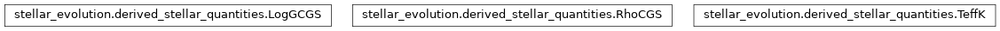
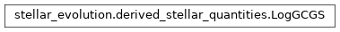
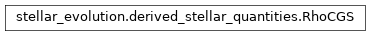
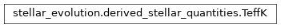

stellar_evolution.derived_stellar_quantities module¶
Class Inheritance Diagram¶

Define more quantities directly calculable from POET stellar evolution.
-
class
stellar_evolution.derived_stellar_quantities.LogGCGS(mass, radius, reference_logg=0.0)[source]¶ Bases:
objectLog10 of stellar surface gravity it cgs units.
-
__init__(mass, radius, reference_logg=0.0)[source]¶ Log10 of the gravitational acceleration from mass and radius.
Parameters: - mass – The mass of the star whose gravity we are interpolating.
- radius – A library_interface Quantity instance, giving the stellar radius as a function of age.
- reference_logg – The returned value is the deviation from this. Useful when passing to solvers or minimizers.
Returns: None
-
-
class
stellar_evolution.derived_stellar_quantities.RhoCGS(mass, radius, reference_rho=0.0)[source]¶ Bases:
objectMean stellar density in cgs units.
-
__init__(mass, radius, reference_rho=0.0)[source]¶ Stellar density (cgs) from mass and radius.
Parameters: - mass – The mass of the star whose gravity we are interpolating.
- radius – A library_interface Quantity instance, giving the stellar radius as a function of age.
- reference_rho – The returned value is the deviation from this. Useful when passing to solvers or minimizers.
Returns: None
-
-
class
stellar_evolution.derived_stellar_quantities.TeffK(radius, luminosity, reference_Teff=0.0)[source]¶ Bases:
objectStellar effective temperature in Kelvin.
-
__init__(radius, luminosity, reference_Teff=0.0)[source]¶ Effective temperature from radius and luminosity.
Parameters: - radius – A library_interface Quantity instance, giving the stellar radius as a function of age.
- luminosity – A library_interface Quantity instance, giving the stellar luminosity as a function of age.
- reference_Teff – The returned value is the deviation from this. Useful when passing to solvers or minimizers.
Returns: None
-